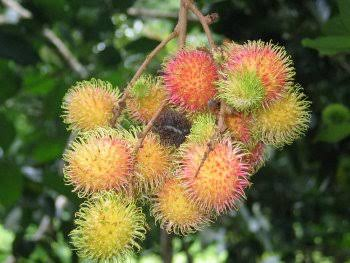
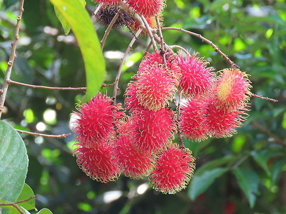
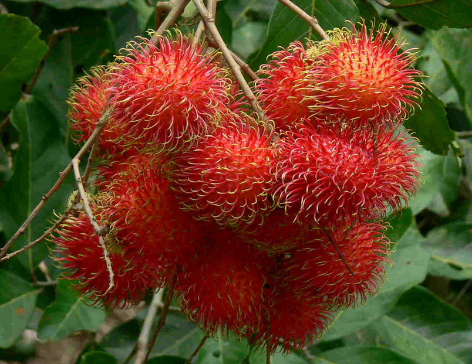
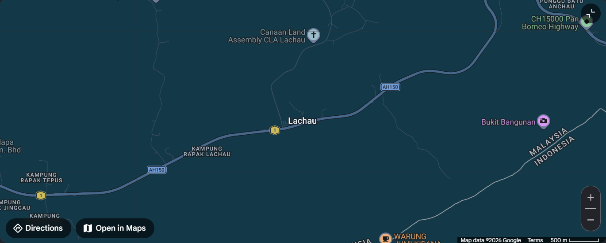

Plant Identification
Guidelines for Plant Identification
- Maximum of 4 pictures: Upload up to four pictures of the same plant.
- Include a plant feature: Try to show a leaf, flower, fruit, or bark clearly.
- Recommended image width: Use clear images with a width of around 1280 pixels.

Example Identification Result
Plant Names
- Scientific Plant Name:
- Nephelium lappaceum
- Common Name:
- Rambutan
Plant Identified



Care Tips for This Plant
-
Water only in dry spells
- Rainfall of 2,000-5,000 mm usually covers its needs, so irrigation isn't widely used.
- Irrigate only where rainfall is below optimum or the pattern is uncertain.
- Keep drainage free, since roots suffer in waterlogged ground.
-
Fertilise twice a year
- Give 1 kg ammonium sulfate + 1 kg 12-24-12 per tree right after harvest.
- Repeat with 1 kg ammonium sulfate near the end of the rainy season.
- A 6,720 kg/ha crop removes about 15 kg N and 11.5 kg K per hectare.
-
Prune lightly, shelter from wind
- Prune lightly only to improve form and strengthen the tree.
- Strong wind during flowering and fruiting causes much damage.
- Watch for stem canker, which can be fatal if not controlled early.
Right environment for this plant
-
Warm and humid
- It grows best close to the Equator, from sea level up to about 600-700 m.
- It likes 22-30 °C all year with air that stays damp (about 82% humidity).
- The dry season should not last much more than 3 months.
-
Plenty of rain
- It wants roughly 2,000-5,000 mm a year — that's 2 to 5 metres of water.
- Even 2,500 mm or more suits it fine in humid lowlands.
- What counts is that the rain is spread out, not the total, so water it if a dry spell drags on.
-
Rich, loose soil
- Best in deep, fertile soil that drains freely, with plenty of organic matter.
- Gentle slopes suit it; the water table should sit below 3 m.
- Keep the soil on the sour side (pH 4.5-6.5) — too alkaline and the leaves yellow from lack of iron and zinc.
Main Location Where the Plant Can Be Found
